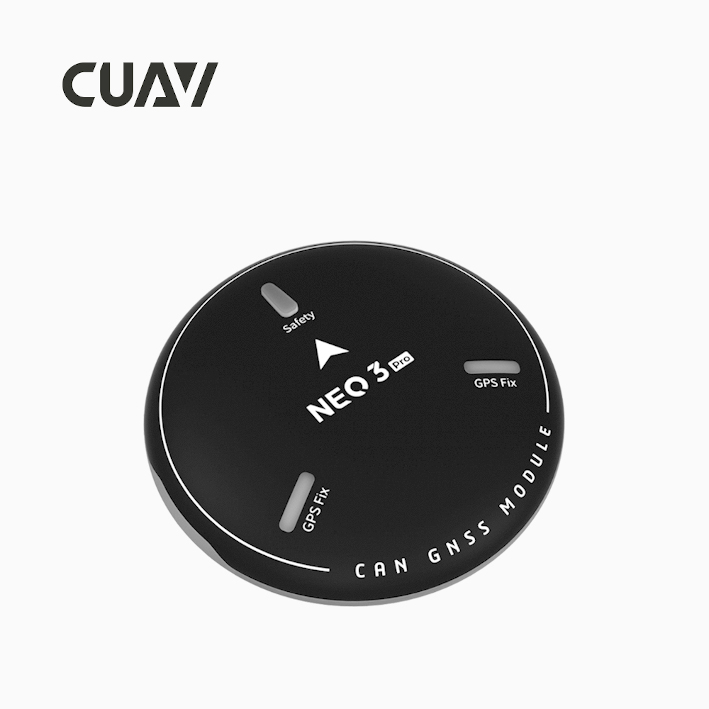
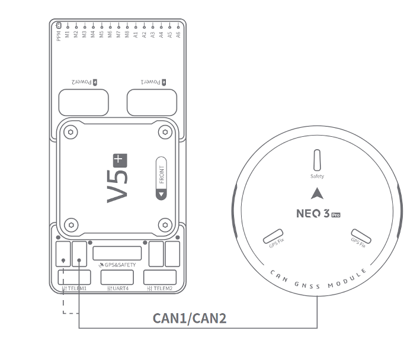
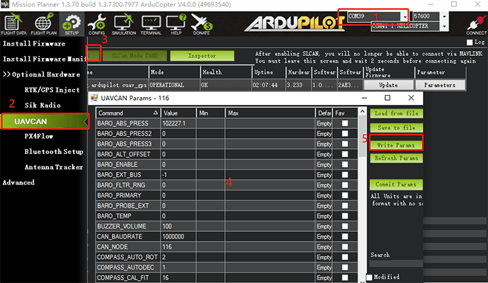
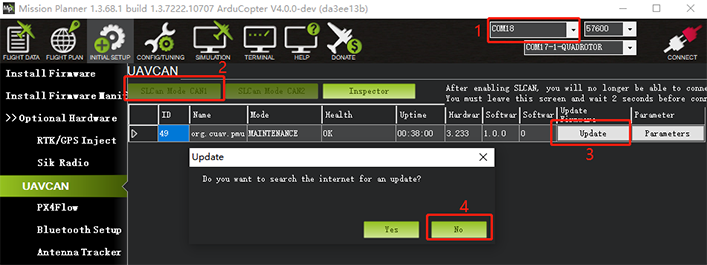

NEO 3 Pro GPS¶
NEO 3 pro is DroneCAN standard GPS developed by CUAV. It integrates industrial-grade compass, barometer, autopilot status light, buzzer, and safety switch all in one package. It has the characteristics of high safety and strong interference resistance.It integrates ublox m9n module and can receive signals from GPS, Galileo, GLONASS and Beidou at the same time.
{kind=link}
Note
NEO 3 pro is supported in ArduPilot 4.0 firmware (and higher).
Key Features¶
Processor
STM32F412
Sensors
Compass:RM3100
Barometer:MS5611
RTK Receiver
Ublox M9N
GNSS Bands
GPS/QZSS L1 C/A,GLONASS L10F ,BeiDou B1I,Galileo E1B/C,SBAS L1 C/A: WAAS, EGNOS, MSAS, GAGAN
Number of concurrent GNSS
4 Simultaneous reception of satellite information
Number of satellites(MAX)
Up to 32
Nav. update rate
RTK Up to 25HZ
Position accuracy
1.5M(use sbas；default）
2.0M(not sbas
Acquisition
Cold starts 24 s
Aided starts 2 s
Reacquisition 2 s
Sensitivity
Tracking & Nav -167 dBm
Cold starts -148 dBm
Reacquisition -160 dBm
Protocol
DroneCAN
Interface Type
GHR-04V-S
Input voltage
5V
Operating temperature
-10~70℃
Size
60x60x16mm
Weight
33g
Purchase¶
You can buy it from CUAV store.
Connect to CUAV v5+¶
{kind=link}
Note
The connection to other autopilots is similar.
Enable CAN port, DroneCAN, and Configure for NEO-V2 Pro¶
See CAN Bus Setup and DroneCAN Setup for more information.
Set the following parameters in all parameter tables of Mission planner and restart after writing
CAN_P1_DRIVER set to 1.
CAN_P2_DRIVER set to 1.
CAN_D1_PROTOCOL set to 1.
CAN_D2_PROTOCOL set to 1.
NTF_LED_TYPES set to 231.
GPS_TYPE set to 9.
{kind=link}
NEO 3 pro is now ready for operation
SLCAN Interface¶
If you need to set up NEO 3 pro or upgrade its firmware, you need to enable SLCAN
Note
ArduPilot 4.0 or later firmware supports SLCAN.
Please connect NEO 3 pro to the autopilot’s CAN1 interface.
Open mission planner and connect autopilot.
Modify the following parameters in the Full Parameter tab of Mission Planner.
for CUAV V5+/nano:
CAN_SLCAN_CPORT set to 1
SERIAL7_PROTOCOL set to 22
Reboot autopilot
Note
CUAVV5 / NANO / FMUV5 autopilot running ArduPilot4.0 or later firmware will have two USB interfaces, one is autopilot’s console port (SERIAL0) running MAVLINK and one is an SLCAN interface port; if there are not two ports showing in the Mission Planner Comm Port drop-down box, please uninstall the driver and reinstall. If you continue to have problems, see Troubleshooting Composite Connections
For Pixhawk series / FMUv2 / FMU V3 / FMU V4
CAN_SLCAN_CPORT Set to 1
CAN_SLCAN_TIMOUT Set to 0 (no timeout, reboot to return to normal operation)
CAN_SLCAN_SERNUM Set to 0
Please do not reboot the autopilot until your operation is complete.
Note
STM32F4 does not support dual virtual USB ports, so autopilots using STM32F4 processor can only be used for SLCAN after the MAVLink connection on USB is closed; after writing the above settings, the USB interface becomes an SCLAN port; MAVLink connections can be made again after a reboot. Until then the USB connection can be used for SLCAN operations.
NEO-V2 Internal Configuration¶
ArduPilot supports setting DroneCAN device internal settings through SLCAN, such as modifying node ID; enabling / disabling barometer, etc.
{kind=link}
Select the COMM port corresponding to SLCAN.
Select the DroneCAN section under Initial Setup>Optional Hardware tab.
Click “SLCAN NODE CAN1” and
Click “Inspector”
Change configuration parameters for DroneCAN device
Enable barometer
Baro_enabled=1, 0=disabled
Reboot
Modify device ID
Modify the CAN_NODE parameter
Upgrade Firmware¶
Method One： Firmware upgrade using Mission planner
{kind=link}
Select the COMM port corresponding to SLCAN.
Click “SLCAN NODE CAN1” on the DroneCAN section under Initial Setup>Optional Hardware tab.
Click “Update”
Select “NO” in the pop-up prompt box (Tes is to select online firmware; No selects local firmware).
Select firmware file.
{kind=link}
Wait for the flash process to complete.
Method Two：
Upgrade with DroneCAN GUI TOOL software
Select the device port corresponding to SLCAN and click “ok”
{kind=link}
Click “√”; then double-click on the device information (marked in Figure 2 below).
{kind=link}
Click “update firmware”, the message box will pop up “yes”.
{kind=link}
The mode/heakth/uptime entry becomes “SOftware_update”
{kind=link}
Waiting for firmware write to complete.
{kind=link}